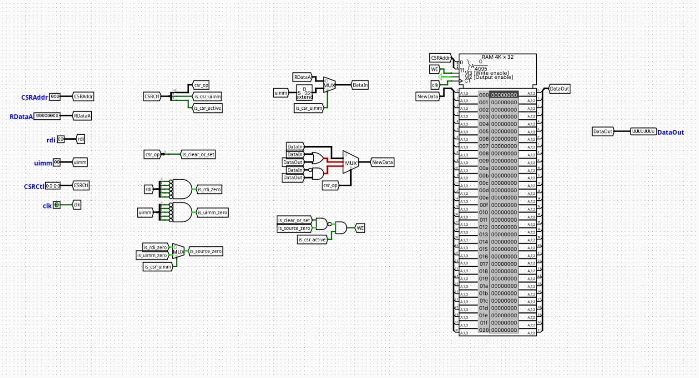

CSR Unit (Control and Status Register)
Overview
The CSR Unit provides the structural storage and bitwise manipulation logic required to support the RISC-V Zicsr standard extension. It handles the state tracking for status, counter, and control registers.
- Purpose in CPU: Executes atomic read-and-modify operations on Control and Status Registers (CSRs), allowing the processor to interface with system-level control registers, privilege modes, and performance counters.
-
Role in datapath: Positioned in the Memory (MEM) stage of the pipeline. It reads the current register state to supply the Writeback (WB) path for the general-purpose register file (
rd) before executing the requested bitwise modifications via an internal transformation matrix and writing the updated value back to the internal RAM on the clock edge. -
Source:
logisim/RiskVMemory.circ
Interface
Inputs
| Signal | Width | Description |
|---|---|---|
CSRAddr |
12 | The 12-bit absolute address specifying which CSR register to access (from the instruction payload). |
RDataA |
32 | The forwarded data value read from general-purpose register rs1, used as the operand for register-source variants. |
rdi |
5 | The raw 5-bit register source index from the instruction (instruction[19:15]), used for register-zero detection. |
uimm |
5 | The raw 5-bit immediate value payload from the instruction (instruction[19:15]), used for immediate-zero detection. |
CSRCtl |
4 | Packed unified control bus: CSRCtl[3] = Active flag, CSRCtl[2] = Source selection, CSRCtl[1:0] = Bitwise operation code. |
clk |
1 | Master system clock signal driving the synchronous write operations of the internal storage block. |
Outputs
| Signal | Width | Description |
|---|---|---|
DataOut |
32 | The old read data extracted from the CSR memory block prior to modification, routed to the WB stage multiplexer. |
Output Logic (Core Definition)
Defines how outputs and internal write behaviors are derived from inputs.
Rule-based definition
- Master Execution Validation:
is_csr_active=CSRCtl[3]is_csr_uimm=CSRCtl[2]-
csr_op=CSRCtl[1:0] -
Zero-Operand Suppression Loop:
- If
rdi == 5'b00000→is_rdi_zero = 1 - If
uimm == 5'b00000→is_uimm_zero = 1 -
is_source_zero=is_csr_uimm?is_uimm_zero:is_rdi_zero -
Modifier Instruction Extraction:
-
is_clear_or_set=csr_op[1](Evaluates high forCSRRS,CSRRC,CSRRSI,CSRRCI) -
Write Enable Generation (
WE): - If
is_csr_active == 1and(is_clear_or_set NAND is_source_zero) == 1→WE = 1 -
Otherwise →
WE = 0 -
Internal Data Modification (
NewData): - If
csr_op == 2'b01(Write Variant:CSRRW,CSRRWI) →NewData = DataIn - If
csr_op == 2'b10(Set Variant:CSRRS,CSRRSI) →NewData = DataOut OR DataIn - If
csr_op == 2'b11(Clear Variant:CSRRC,CSRRCI) →NewData = DataOut AND (NOT DataIn)
Boolean expressions
is_clear_or_set = CSRCtl[1]
is_source_zero = (CSRCtl[2]) ? is_uimm_zero : is_rdi_zero
WE = CSRCtl[3] AND (is_clear_or_set NAND is_source_zero)
Internal Design
The component utilizes a mixed combinational and synchronous sequential layout to ensure atomic operation parameters are honored within a single execution cycle:
- Control Demultiplexing: A multi-bit splitter fractures the 4-bit
CSRCtlbus into standalone control tunnels (is_csr_active,is_csr_uimm,csr_op). A separate 2-bit splitter processescsr_opto decode theis_clear_or_setparameter. - Zero-Detection Network: Multi-input
ANDgates featuring bitwise-inverted inputs independently evaluate the 5-bitrdianduimmbuses to detect zero-value conditions. A 2-to-1 multiplexer driven byis_csr_uimmchooses the appropriate zero flag, outputting tois_source_zero. - Operand Data Source Selection: A 32-bit zero-extender expands the 5-bit
uimmliteral to 32 bits. A 32-bit 2-to-1 multiplexer driven byis_csr_uimmselects betweenRDataAand the zero-extended value, establishing the internalDataInbus. - Bitwise ALU Matrix: Houses parallel combinational gate networks (a bitwise
ORgate and a bitwiseANDgate with an inverted input leg forDataIn). The transformation outputs feed into a 32-bit 4-to-1 multiplexer driven bycsr_opto resolve the finalNewDatabus. - Sequential Storage Element: Utilizes the built-in Logisim synchronous RAM block configured for a 12-bit address space (
CSRAddr) and a 32-bit data width. TheWEinput port is driven by the gated logic matrix, theDinput port receives the calculatedNewDatabus, and theRE(Read Enable) pin is wired permanently high via aPowerterminal to bypass synchronous read latency.
Operation
Step-by-step behavior during a single execution clock cycle:
- Inputs Arrive: The
CSRAddr,RDataA,rdi,uimm, andCSRCtlsignals stabilize at the component inputs. - Read Phase (Instantaneous): The address
CSRAddraccesses the transparent RAM block, which immediately drives its output port to establish theDataOuttunnel. This value leaves the component immediately to satisfy the destination register writeback path. - Decoding and Selection: The
CSRCtlsplitter isolates the control fields. The zero-detection blocks determine if the current operand mask is zero, while the input multiplexer builds the 32-bitDataInbus. - Logic Evaluation: The internal bitwise ALU matrix computes the alternative
NewDatatransformation variants concurrently. The 4-to-1 multiplexer handles selection based oncsr_opto present the update profile to the memory write port. Concurrently, the gatedNAND/ANDarray resolves theWEpin status. - Clock Edge Sync: Upon the arrival of the positive clock edge (
clk), ifWEis asserted, the value on theNewDatabus is locked into the register slot addressed byCSRAddr.
Pipeline Interaction
- Pipeline Stage Involvement: Implemented structurally inside the Memory (MEM) stage.
- Signal Propagation: Receives its configuration parameters and data references from the
EX/MEMpipeline register boundaries. - Dependencies & Hazards: The master validation bit
CSRCtl[3](is_csr_active) is exported to the processor's centralized Hazard Controller from the ID, EX, and MEM stages. If a structural collision is detected onCSRAddracross consecutive instructions, the Hazard Controller dropsPC_Write_EnableandIF_ID_Write_Enablewhile flushing theID/EXboundaries to enforce a single-cycle hardware bubble.
Examples
Example: CSRRS Instruction (Register Set, Source != x0)
Inputs:
CSRCtl=4'b1010(is_csr_active = 1,is_csr_uimm = 0,csr_op = 2'b10)rdi=5'b00101(x5)RDataA=32'h000000FF(Set mask)RAM[CSRAddr]=32'hF0000000(Initial state)
Outputs / Internal State Transitions:
is_clear_or_set=1is_source_zero=0WE=1 AND (1 NAND 0)=1(Write authorized)DataOut=32'hF0000000(Original state exported to register file writeback)NewData=32'hF0000000 | 32'h000000FF=32'hF00000FF(Committed to RAM on clock edge)
Limitations / Assumptions
- Assumes a valid Zicsr instruction payload formatting.
- No hardware privilege mode verification or access violation trapping is implemented.
- Pure combinational propagation delay through the bitwise processing gates is unmodeled.
Implementation Notes (Logisim)
- Built using native Logisim-Evolution standard component structures only.
- The RAM element requires a constant high logic state connected to its
REinput port to preserve single-cycle datapath performance constraints. - Signal widths map strictly to the standard RV32Zicsr architectural blueprint.